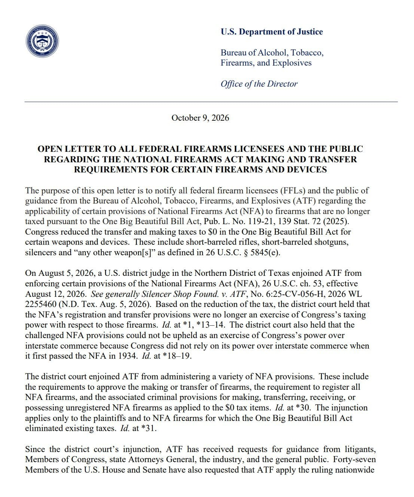

NFA (National Firearms Act - 전미총기규제) 가 효력을 잃고 앞으로는 NFA의 단축형소총 (강선이 파인 모든 총), 단축형 산탄총, 소음기, "그 외 총기" 등의 거래와 등록이 추가 행정 절차 및 $200 세금으로부터 자유로워진다고 함.
단, 동일한 취급의 NFA 품목인 기관총은 이에 해당하지 않음

NFA (National Firearms Act - 전미총기규제) 가 효력을 잃고 앞으로는 NFA의 단축형소총 (강선이 파인 모든 총), 단축형 산탄총, 소음기, "그 외 총기" 등의 거래와 등록이 추가 행정 절차 및 $200 세금으로부터 자유로워진다고 함.
단, 동일한 취급의 NFA 품목인 기관총은 이에 해당하지 않음
미쳤구만
총기사고 갈수록 늘어다던데
미국놈들 진짜 어쩔려고 그러나
나중에 정권바뀌더라도
풀리고 난 다음에 규제가 무근 의미가 있나
스스로 몸 지키라고 아 ㅋㅋㅋㅋ
내가 있는 동네 근처에서도 총기난사사건 있었음. 한밤중에 보트타고 강변에 있는 식당에다가 사람들 조준사격함. 용의자는 전직군인이었고. 몇명 죽었는데 한국에는 뉴스안뜸.
한국에 뉴스 안뜨는 총기난사사건 존나 많음.
연간 1만명 이상이 총기에 살해 당하는데
이건 뭐 전쟁이지..
매년 4만명임
자살과 사고 빼고 순수 살인만 15000명 수준임
신고는 기존대로 하고 신고할때 내는 세금 200달러만 없어짐
보통 800달러 수준으로 구매하는데 200달러면 크지
총기난사 막지도 못하면서 규제까지 푸네
??? : 어차피 못막는거 우리 돈이나 실컷벌자고
트럼프 암살위협 급증
근데 저기는 구하려면 얼마든지 구할수잇는 나라라 그냥 싹 양성화하고 세금이나 걷어보자 이런 마인드 아닐가
제일 윗대가리가 총기규제 반대파라
??? :1인1총으로 MAGA사상 이룩하자
당선 가능성 낮아지니까 걍 똥뿌리기로 맘 먹은거?
전에 어떤 글에서 자국 내 총기 수요가 늘면 국민들은 보수적 성향이 강해지고 보수쪽 표가 늘어난다는 글을 봤었는데.
미국쪽 애들 말로는
어차피 범죄자 새끼들은 불법총기로 무장하니까.
선량한 시미들의 합법적 총기 무장을 더 쉽게 하자... 뭐 이런 취지라는데...
소음기는 왜.....
조용히 범죄자 잡으라고?
아 소음때문에 민원이 들어온다 아입니까
그래도 총기법 빡센 주들은 주법으로 틀어막겠지
공화당주 거주자들은 좋아하겠네
저게 5.56mm 쓰는 ar15면서 '피스톨' 이라고 판매하는 물건들이 나오는 배경이 된 법안인데, 오래전(1930년대) 제정된 법이 현실을 못 따라가는 상태긴 했음.
세금 부과 안 하는건 올해 1월 1일부터였고, 6웧쯤에 세금 부과 안 하는 행정처리를 유지할 필요가 없다는, 총기업자들이 제기한 소송에서 연방대법원이 총기업자들 손을 들어줬고 오늘은 그게 효력을 발휘해서 관련 업무 집행을 그만둔 것.
그나저나 이렇게 확정되면 '피스톨 브레이스'들 이제 안 나오려나 싶네. 난 그거도 취향에 맞던데 ㅋㅋㅋ
우리입장에서 보면 안됨 우린 이해하기 힘듬
저기도 이해 못하는애들 많던데
한마디로 은닉형 총기들이 보다 자유롭게 된다는 말이네
열렬지지하던 찰리커크인가 머시기도 목에 총알 한방에 죽은 나라에
당장 현대통령도 저격당한 전례가 있는데도 ㅋㅋ
시발.. 그런거 보니 단순히 자기 지지율 때문이 아니라 나름 신념이 있는거 같기도 하고....
이래가지고 그나마 예방하려고 좋은 빌리지들에 많이 살려고 하지
애들 요즘 하는거보면 진짜 더 퍼지 찍을거 같음
아니 근데 세금은 내고 그래야지
무차별 총기난사를 총기로 막으란거네 이젠 어린이들도 호신용 글록 하나씩 가방에 넣어다녀야 하네
총기 난사도 미국의 문화지 뭐
로비를 얼마나 받았을지
민속놀이라서 이제 즐기는 분위기인가
기관총 빼곤 다 되는겨? 어설트라이플 계열 연사 허용되는겨? 미친거 같은데..
나도 하나 갖고싶다
트럼프 아들 총맞아 디져도 같은 생각일까?
근데 미국은 이게 맞지 않나? 어차피 불법 무기 넘치는데 최대한 양성화 해야지
한국도 옛날에는 불법무기 넘쳐났는데, 몇십년 걸쳐서 규제해서 막은거지. 한국전쟁 끝나고 산에 들어가면 총 떨어져 있어서... 애들이 수류탄 가지고 놀다가... 이런 얘기는 흔함.
총기규제가 필요하냐 아니냐를 떠나서, 불법무기 유통을 막으려면 지금 당장이 아니라 후손세대를 위해서 막아야한다는 거임
시빌워 전 무기준비해놓으라는거야?